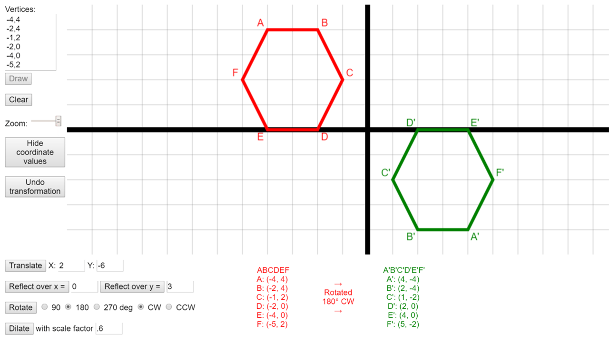

Polygon Transformations
Grade 8, 45-60min
In the Polygon Transformations lesson, students explore geometric manipulations including reflections, translations, rotations and dilations using the Polygon Transformer web app. This tool can be used throughout the unit, and can also be leveraged to create homework and classwork assignments.

Topics addressed
- Plotting polygons on the coordinate plane
- Transforming polygons through translations, rotations, reflections and dilations
- Recognizing and justifying geometric congruence
- Primary CT concept: algorithmic thinking. Students create an algorithm, which in this case is series of transformations, to change their starting polygon (the input) to their final polygon (the output). They can also work to identify the series of steps used when given both the input and the output, another essential skill for algorithmic thinking.
Students will be able to
- Describe how translations, rotations, reflections and dilations affect polygons on the coordinate plane
- Identify congruency in polygons after single or multiple translations, rotations and reflections
- Leverage a visualization tool to help solve geometric problems
Materials
Prep
-
Install Polygon Transformer Chrome app on students’ Chromebooks (through Google Admin console), provide a link where they can install the Chrome app from, or provide a link to the web app. If you are not using Chromebooks, you must use the web app. It is possible to run this activity without the app, if you do not have devices for students.
Suggested lesson breakdown
The Polygon Transformer app can be integrated into many lessons you likely already have – have students check their work on paper using the app, or allow them to use the app on some questions, or for homework. A possible worksheet is provided above, but it will heavily depend on how far into the geometric transformations unit your students are.
- 5min – introduce and demo Polygon Transformer app so students know what to expect and how to use it
- 30min – students use Polygon Transformer app to work through worksheet individually or with a partner
- 10-30min – students have “free time” to further explore the app, creating new shapes and exploring what different series of transformations lead to
Common Core standards
-
CCSS.Math.Content.8.G.A.1
Verify experimentally the properties of rotations, reflections, and translations.
-
CCSS.Math.Content.8.G.A.2
Understand that a two-dimensional figure is congruent to another if the second can be obtained from the first by a sequence of rotations, reflections, and translations; given two congruent figures, describe a sequence that exhibits the congruence between them.
-
CCSS.Math.Content.8.G.A.3
Describe the effect of dilations, translations, rotations, and reflections on two-dimensional figures using coordinates.
-
CCSS.Math.Content.8.G.A.4
Understand that a two-dimensional figure is similar to another if the second can be obtained from the first by a sequence of rotations, reflections, translations, and dilations; given two similar two-dimensional figures, describe a sequence that exhibits the similarity between them.